"The canvas unfolding in real time — an original work born in the presence of those gathered, carrying within it the breath of the occasion."
Live painting is, for me, where the studio meets the stage. Each event becomes a one-time ritual: a blank canvas, a room alive with presence, and the silent alchemy of turning atmosphere into image.
What the audience witnesses is not a demonstration — it is the genesis of an original work, unfolding through the hours of the evening. By the final brushstroke, the painting carries within it the light of the venue, the music in the air, and the presence of every soul in the room.
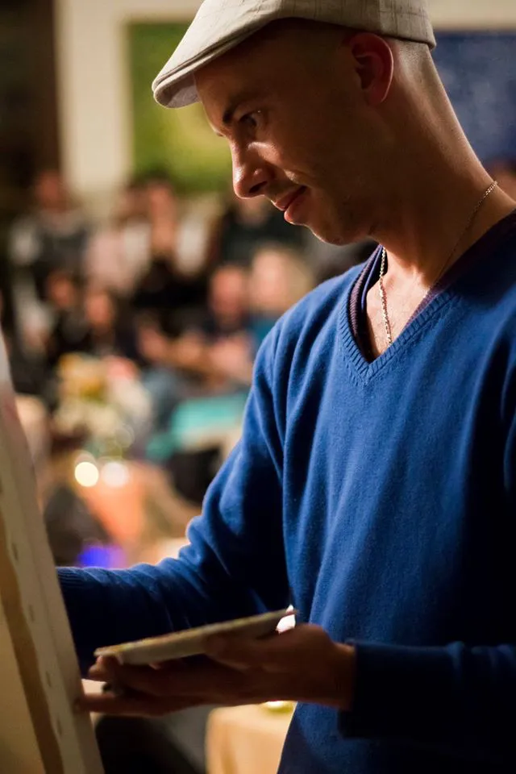
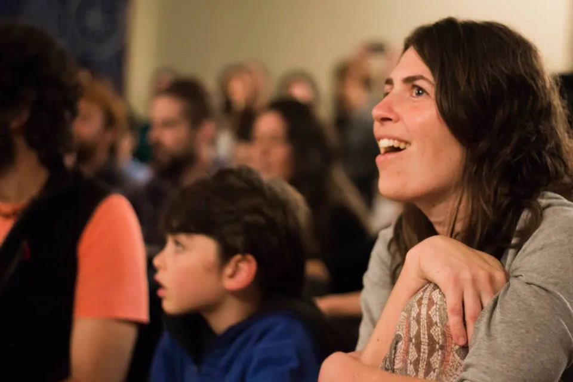
Brand-defining evenings elevated into living art — a centerpiece that commands attention and lingers in memory.
Original works born on-site, raised that same night in service of meaningful causes and noble missions.
Painting to the pulse of live music — a visual dialogue with the stage, unfolding in resonance with every note.
An heirloom painting born on the most important night — a singular artifact of a day that will never be repeated.
Inaugurating a new venue, wing or destination by creating its first soul — a founding artwork anchored to the place itself.
Bespoke performances for a reserved audience — where the artwork becomes a confidence shared among the few invited.
A living installation within curated cultural contexts — museums, fairs, and institutional stages.
Diplomatic evenings, embassy occasions and private-club receptions — where protocol meets the grace of living art.
Visualized impressions · The living canvas across contexts
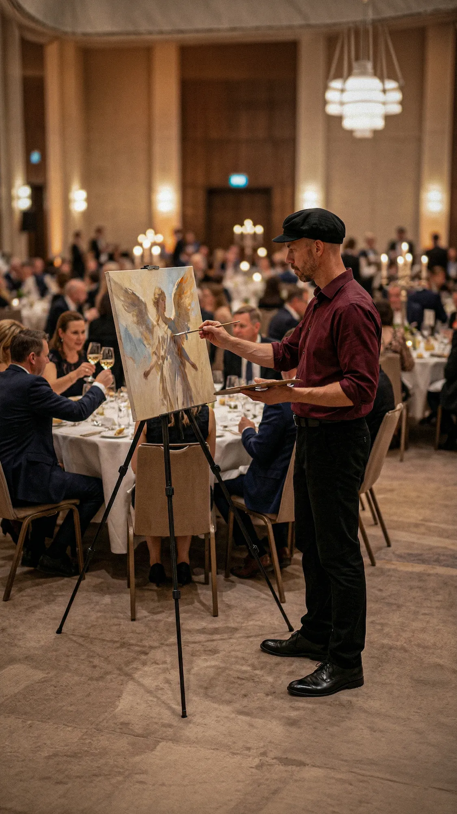
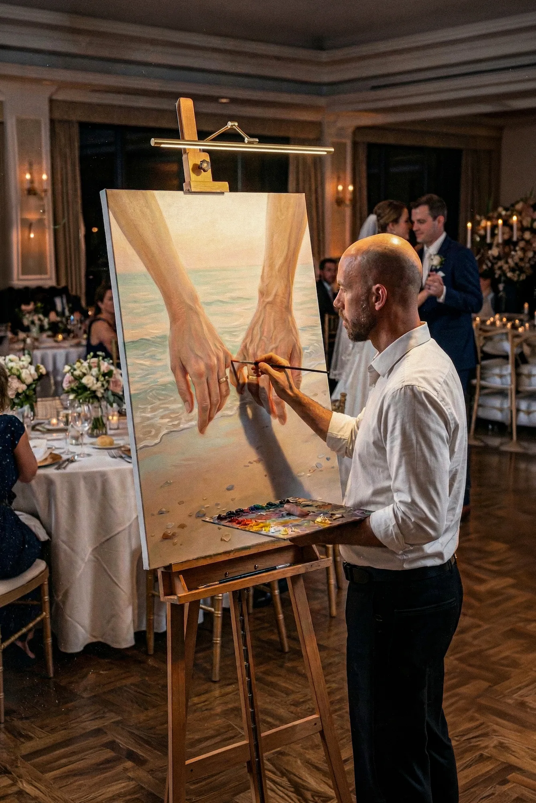
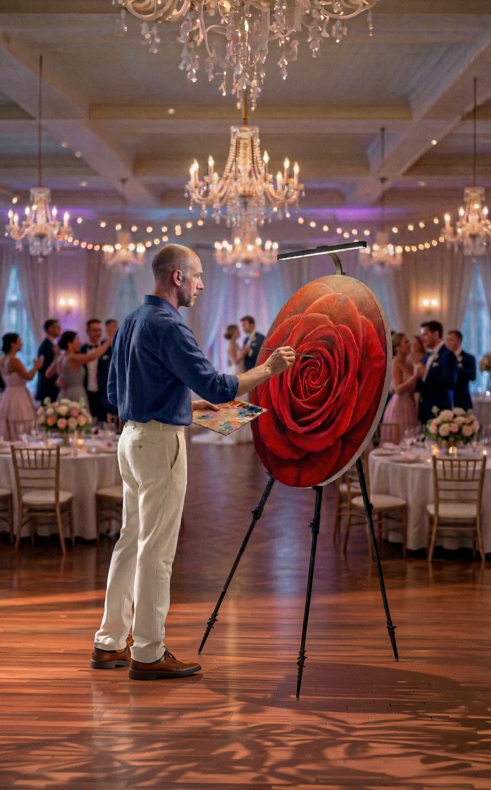
Painting live is, for me, one of the most profound joys of this craft. The energy of the room, the presence of the audience, the air of the occasion — all of it enters the canvas. For many, it is the first time they witness a true painting being born before their eyes: from silence and white linen to a finished work of art. That moment holds something of wonder, something of surprise, and — I like to believe — something of the sacred.
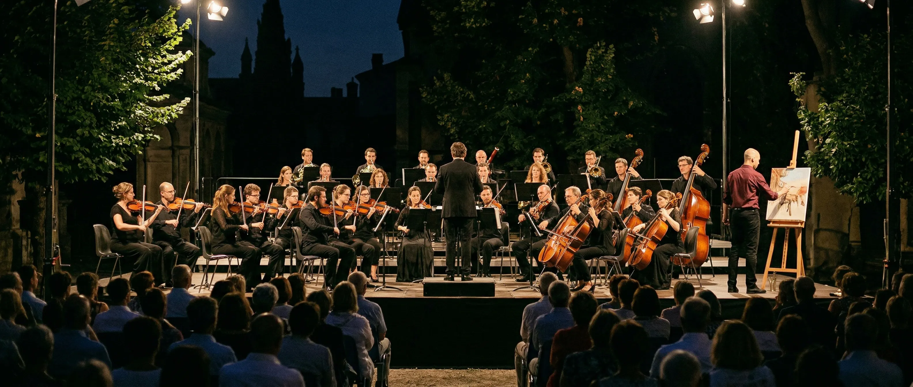
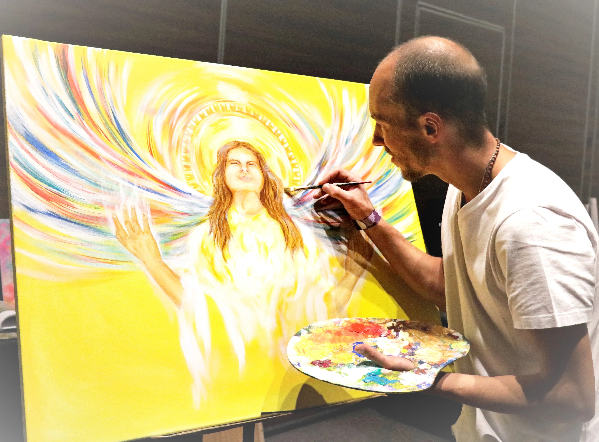
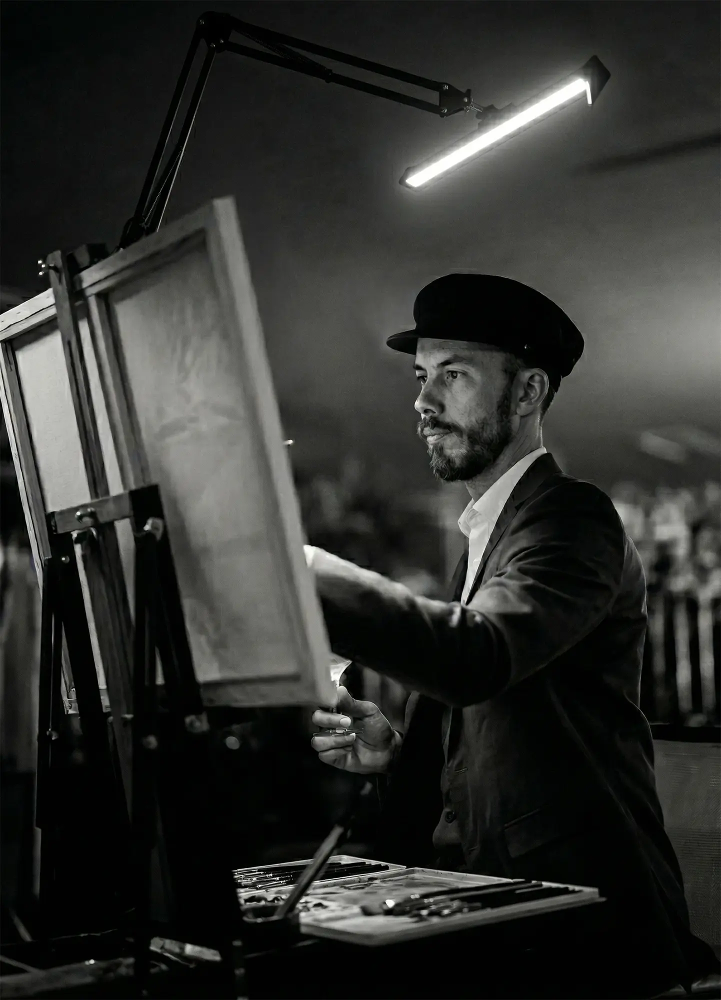
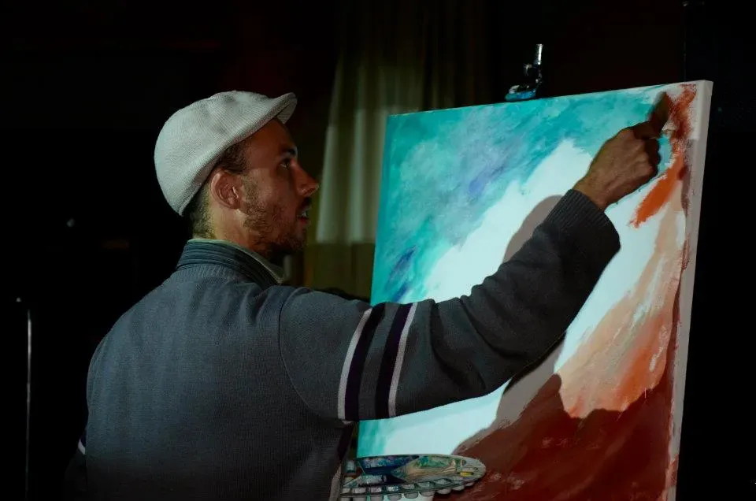
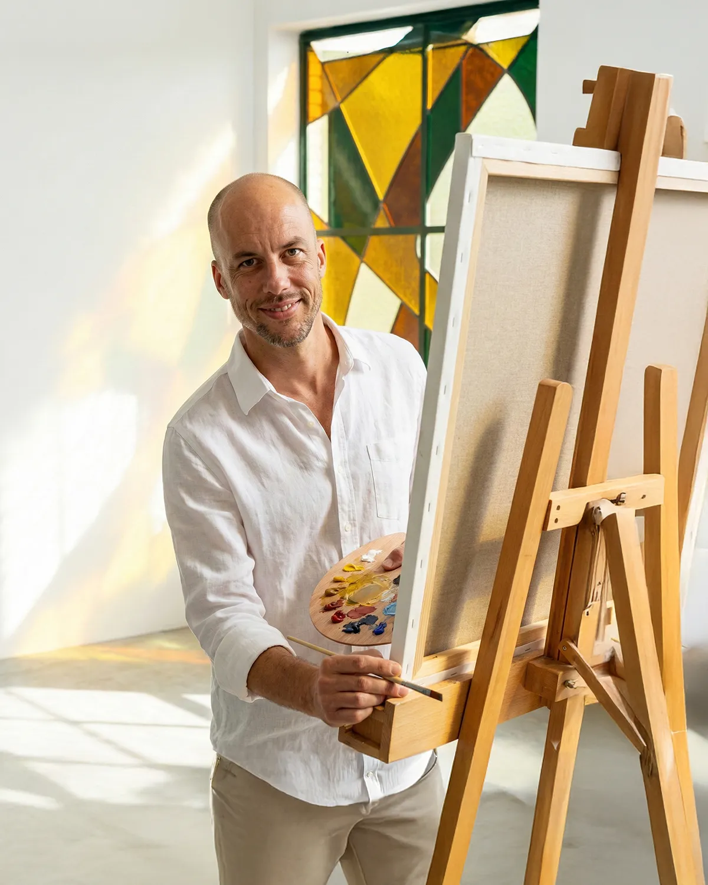
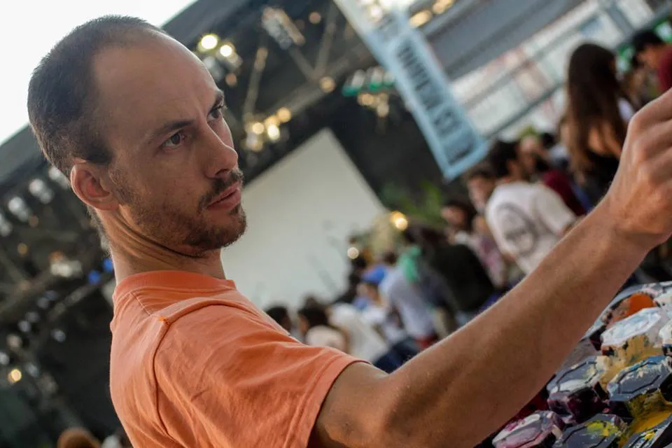
Every live work finds its destiny within the occasion itself. Some are commissioned in advance by the hosts, becoming lasting emblems of the evening. Others are auctioned that same night in service of philanthropic causes. Some are gifted. Some are drawn among the guests as a gesture of gratitude. Every painting carries a story — and a destination — of its own.
Share the details of your occasion. Each engagement is approached as a bespoke commission — conceived with care, precision, and the fullest respect for the moment it will inhabit.
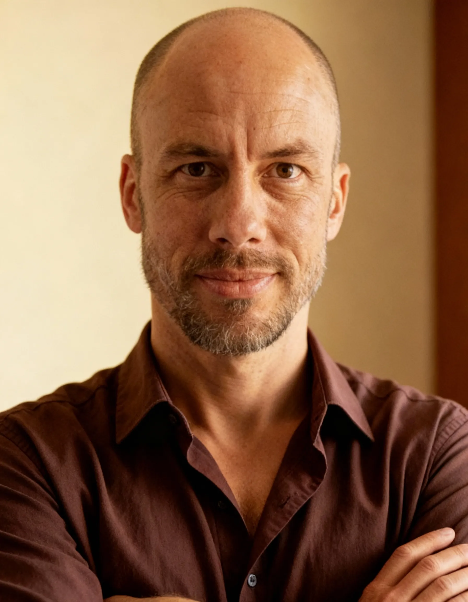